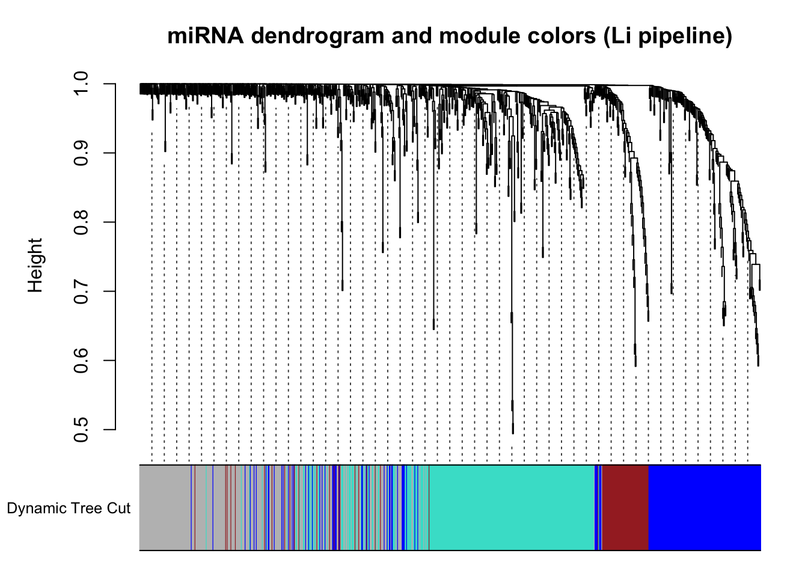
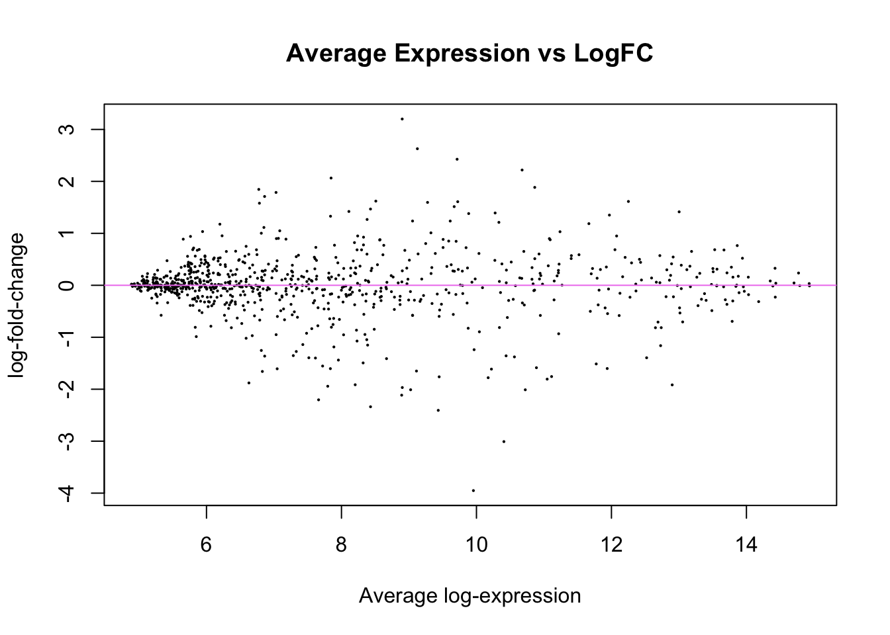
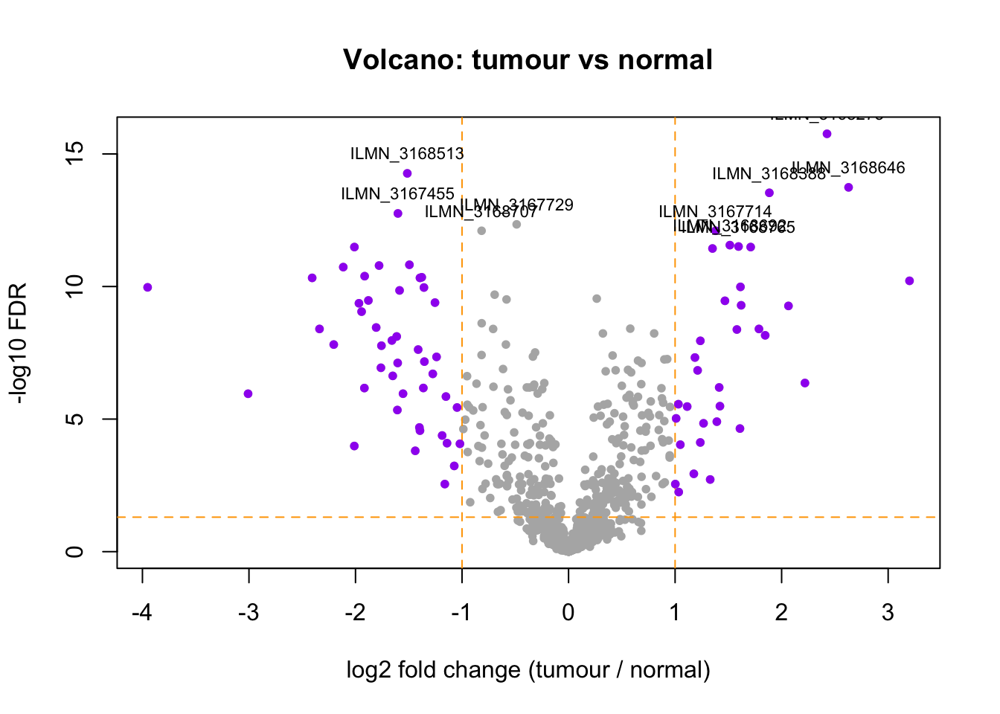
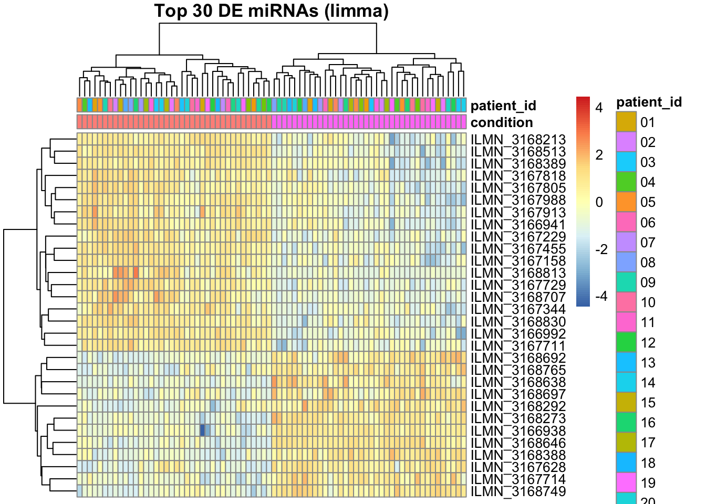

is_mature_v12 <- annot$TargetMatureVersion ==12# TargetMatureVersion tells which version of that miRNA target library the probe’s annotation is based on -> lose 28 miRNAis_control <-grepl("control|spike|U6|snoR", annot$SYMBOL, ignore.case =TRUE)# To identify control miRNA to remove (actually none)keep_probes <- is_mature_v12 &!is_controlexpr <- expr[keep_probes, ]annot <- annot[keep_probes, ]dim(expr)
# Create patient IDs & remove outlier pairs ----# Extract patient ID from title, e.g. "non-OSCC_01N" -> "01"pheno$patient_id <-sub(".*_(\\d+)[NT]$", "\\1", pheno$title)pheno$patient_id <-as.character(pheno$patient_id)# Outlier control samples (from dendrogram)outlier_samples <-c("GSM1099641", "GSM1099655")# Patients corresponding to those outliersoutlier_patient_ids <-unique(pheno$patient_id[ pheno$geo_accession %in% outlier_samples])# Remove ALL samples (normal + tumor) for those patientskeep_samples <-!pheno$patient_id %in% outlier_patient_idsexpr_norm <- expr_norm[, keep_samples]pheno <- pheno[keep_samples, ]
Preprocessing done, we now start with the new method!
# -------------------------------# Li et al. pipeline: WGCNA on all samples (no Δ) ----# -------------------------------# Define condition from title suffix (as done before)pheno$condition <-ifelse(grepl("T$", pheno$title), "tumor", "normal")# WGCNA expression data:# rows = samples (arrays), columns = miRNAsdatExpr <-t(expr_norm) # 76 samples × 830 miRNAsdim(datExpr) # 76 x 830
[1] 76 830
# Check for bad samples/genesgsg <-goodSamplesGenes(datExpr, verbose =3)
Flagging genes and samples with too many missing values...
..step 1
gsg$allOK # TRUE
[1] TRUE
# Soft-threshold power selection (unsigned, as in Li et al.) ----powers <-1:20sft <-pickSoftThreshold(datExpr,powerVector = powers,networkType ="unsigned",verbose =5)
dissTOM <-1- TOMgeneTree <-hclust(as.dist(dissTOM), method ="average")plot(geneTree,main ="Clustering of miRNAs based on TOM (unsigned, Li pipeline)",xlab ="", sub ="", cex =0.4)
dynamicColors
blue brown grey turquoise
201 85 250 294
plotDendroAndColors( geneTree, dynamicColors,"Dynamic Tree Cut",dendroLabels =FALSE,hang =0.03,addGuide =TRUE,guideHang =0.05,main ="miRNA dendrogram and module colors (Li pipeline)")

# Module eigengenes + merging ----moduleColors0 <- dynamicColorsMElist <-moduleEigengenes(datExpr, colors = moduleColors0)MEs <-orderMEs(MElist$eigengenes)# Eigengene clusteringMEDiss <-1-cor(MEs)METree <-hclust(as.dist(MEDiss), method ="average")mergeCutHeight <-0.25# standard WGCNA choiceplot(METree,main ="Clustering of module eigengenes (before merging)",xlab ="", sub ="")abline(h = mergeCutHeight, col ="red")# Actually the merging will do nothing as the modules are far apart# Merge similar modulesmerge <-mergeCloseModules( datExpr, moduleColors0,cutHeight = mergeCutHeight,verbose =3)
mergeCloseModules: Merging modules whose distance is less than 0.25
multiSetMEs: Calculating module MEs.
Working on set 1 ...
moduleEigengenes: Calculating 4 module eigengenes in given set.
Calculating new MEs...
multiSetMEs: Calculating module MEs.
Working on set 1 ...
moduleEigengenes: Calculating 4 module eigengenes in given set.
moduleColors <- merge$colorsMEs <-orderMEs(merge$newMEs)plotDendroAndColors( geneTree,cbind(moduleColors0, moduleColors),c("Dynamic Tree Cut", "Merged modules"),dendroLabels =FALSE,hang =0.03,addGuide =TRUE,guideHang =0.05,main ="Modules before and after merging")
# Sample-level traits for LMM (Li et al.) ----# We already have pheno$patient_id and pheno$condition# Make sure rownames(pheno) are sample IDs and match datExpr rowsstopifnot(identical(rownames(pheno), rownames(datExpr)))# Numeric tumour indicator: 0 = normal, 1 = tumourpheno$tumour <-ifelse(pheno$condition =="tumor", 1, 0)# Age and stage (same for both samples of a patient)pheno$Age <-as.numeric(pheno[,"age:ch1"])pheno$Stage_num <-as.numeric(factor(pheno[,"Stage:ch1"],levels =c("I","II","III","IVA")))# Keep only the columns we need and align with datExprsampleTraits <- pheno[, c("patient_id", "tumour", "Age", "Stage_num")]rownames(sampleTraits) <-rownames(pheno)# Check alignmentidentical(rownames(sampleTraits), rownames(datExpr))
[1] TRUE
# Data for LMM: traits + eigengenesdatLMM <-cbind(sampleTraits[rownames(MEs), ],as.data.frame(MEs))head(datLMM)
# Gene significance (GS) based on LMM per miRNA ----expr_forGS <- datExpr # samples × miRNAsdatGS <-cbind(sampleTraits[rownames(expr_forGS), ],as.data.frame(expr_forGS))miRNAs <-colnames(expr_forGS)gs_list <-lapply(miRNAs, function(g) { form <-as.formula(paste(g, "~ tumour + Age + Stage_num")) fit <-lme(form,random =~1| patient_id,data = datGS,na.action = na.omit,method ="REML") sm <-summary(fit) t_tumour <- sm$tTable["tumour","t-value"]data.frame(miRNA = g, GS =abs(t_tumour), row.names =NULL)})geneGS <-do.call(rbind, gs_list)rownames(geneGS) <- geneGS$miRNA
# Module membership (MM) ----# Drop the "ME" prefix so we get clean module namesmodNames <-substring(colnames(MEs), 3) # "MEturquoise" -> "turquoise"geneModuleMembership <-as.data.frame(cor(datExpr, MEs, use ="p"))colnames(geneModuleMembership) <-paste0("MM", modNames)rownames(geneModuleMembership) <-colnames(datExpr) # miRNA names# Put everything togetherhubData <-data.frame(miRNA =colnames(datExpr),module = moduleColors, geneModuleMembership,GS = geneGS[colnames(datExpr), "GS"],row.names =NULL)
# Intramodular connectivity & hub miRNAs ----IMConn <-intramodularConnectivity(adjacency, moduleColors)IMConn_df <-as.data.frame(IMConn)IMConn_df$miRNA <-rownames(IMConn_df)# Add kWithin into hubDatahubData <- hubData %>%left_join(IMConn_df[, c("miRNA", "kWithin")], by ="miRNA")# Top 10 hubs per module (by kWithin)hubList <- hubData %>%group_by(module) %>%arrange(desc(kWithin)) %>%slice_head(n =10) %>%ungroup()hubList
# A tibble: 40 × 8
miRNA module MMturquoise MMblue MMbrown MMgrey GS kWithin
<chr> <chr> <dbl> <dbl> <dbl> <dbl> <dbl> <dbl>
1 ILMN_3168603 blue 0.0672 0.930 0.302 -0.0774 1.72 15.0
2 ILMN_3167275 blue -0.0461 0.911 0.261 0.0774 0.621 14.6
3 ILMN_3168541 blue -0.199 0.935 0.409 0.117 0.554 14.5
4 ILMN_3167184 blue -0.0164 0.916 0.215 0.0661 0.805 14.2
5 ILMN_3168633 blue 0.0325 0.908 0.227 0.0416 1.28 13.7
6 ILMN_3168736 blue -0.145 0.910 0.308 0.0969 0.265 13.4
7 ILMN_3168183 blue -0.0273 0.925 0.353 -0.0624 0.878 13.4
8 ILMN_3168848 blue -0.0341 0.905 0.257 0.0677 0.740 13.4
9 ILMN_3166996 blue -0.0278 0.895 0.292 0.0182 0.861 12.5
10 ILMN_3167242 blue 0.00604 0.885 0.120 0.0544 1.24 11.8
# ℹ 30 more rows
# Example: GS vs MM for the turquoise moduletargetModule <-"turquoise"inMod <- hubData$module == targetModuleplot(hubData$MMturquoise[inMod], hubData$GS[inMod],xlab ="Module membership (turquoise)",ylab ="Gene significance (|t| for tumour)",main =paste("GS vs MM in", targetModule, "module"))abline(lm(GS ~ MMturquoise, data = hubData[inMod, ]), lty =2)
The closer the absolute value of the x-coordinate (MMturquoise) is to 1, the more strongly that miRNA belongs to the turquoise module. -> looks great used an unsigned network, so it’s totally normal to have lots of negative MM values.
Unsigned used, thus: -> Adjacency uses |correlation| between miRNAs. -> That means miRNAs that are strongly negatively correlated can still be tightly connected and end up in the same module.
table(moduleColors) moduleColors blue brown grey turquoise 201 85 250 294
NEW METHOD 1: LIMMA ————————————————————
#Define condition from title suffixpheno$condition <-ifelse(grepl("T$", pheno$title), "tumor", "normal")#Check that each remaining patient has both N & Ttable(pheno$patient_id, pheno$condition)
#run Limmafit <-lmFit(expr_norm, design)fit <-eBayes(fit)tt <-topTable(fit, coef ="conditiontumor", number =Inf)#statistically significant miRNAs#Method 1: choose the k most significant genes ord_sig <- tt[order(tt$adj.P.Val),]ord_sig[1:10,] #gives the 10 most significant miRNAs
plotMA(fit, coef ="conditiontumor", main="Average Expression vs LogFC")abline(h =0, col ="violet")

#gives two distinct clouds, separation along the the first dimension
# Volcano Plottt_volc <-topTable(fit, coef="conditiontumor", number=Inf)tt_volc$negLog10FDR <--log10(tt$adj.P.Val)#these parameters were chosenp_sig <-0.05co_FC <-1sig <- tt_volc$adj.P.Val < p_sig &abs(tt_volc$logFC) > co_FCplot(tt_volc$logFC, tt_volc$negLog10FDR,pch =20,col ="grey70",xlab ="log2 fold change (tumour / normal)",ylab ="-log10 FDR",main ="Volcano: tumour vs normal")abline(v =c(-1, 1), col ="orange", lty =2)abline(h =-log10(0.05), col ="orange", lty =2)points(tt_volc$logFC[sig], tt_volc$negLog10FDR[sig],pch =20, col ="purple")#label top 10 by FDRtop <-head(order(tt_volc$adj.P.Val), 10)text(tt_volc$logFC[top], tt_volc$negLog10FDR[top], labels=rownames(tt_volc)[top], cex=0.7, pos=3)

#Shows us the logFC plotted against statistical significance
#Heatmap for top DE miRNAslibrary(pheatmap)topN <-30top_ids <-rownames(tt)[order(tt$adj.P.Val)][1:topN]mat <- expr_norm[top_ids, ]ann <-data.frame(condition = pheno$condition,patient_id = pheno$patient_id)rownames(ann) <-rownames(pheno)pheatmap(mat,scale ="row",annotation_col = ann,show_colnames =FALSE,main =paste("Top", topN, "DE miRNAs (limma)"))

COMPARING LIMMA AND PAIRED WGCNA (lw) ——————————————
Do the miRNAs deemed important by paired WGCNA and Limma overlap?
N_comp_lw <-c(200,150,100,50)for(i in1:length(N_comp_lw)){ limma_top <-rownames(ord_sig)[1:N_comp_lw[i]]#WGCNA "importance" score = GS_i * |MM_i|#GS = gene significance: how "phenotype associated" a miRNA is#MM = module membership: how much a miRNA "belongs" to a module mm_col <-paste0("MM", hubData$module) hubData$MM_self <-mapply(function(i, col) hubData[i, col], seq_len(nrow(hubData)), mm_col) hubData$wgcna_score <- hubData$GS *abs(hubData$MM_self) wgcna_top <- hubData$miRNA[order(-hubData$wgcna_score)][1:N_comp_lw[i]]cat("N =", N_comp_lw[i],"\n")cat("Numer of overlapping miRNAs:",length(intersect(limma_top, wgcna_top)))#head(intersect(limma_top, wgcna_top), 20)#failsafe in case the two lists were different lengths universe <-intersect(rownames(ord_sig), hubData$miRNA) A <-length(intersect(limma_top, wgcna_top)) B <-length(setdiff(wgcna_top, limma_top)) C <-length(setdiff(limma_top, wgcna_top)) D <-length(setdiff(universe, union(limma_top, wgcna_top))) fish_comp_lw <-fisher.test(matrix(c(A,B,C,D), nrow=2), alternative="greater")print(fish_comp_lw)}
N = 200
Numer of overlapping miRNAs: 184
Fisher's Exact Test for Count Data
data: matrix(c(A, B, C, D), nrow = 2)
p-value < 2.2e-16
alternative hypothesis: true odds ratio is greater than 1
95 percent confidence interval:
229.3031 Inf
sample estimates:
odds ratio
433.8704
N = 150
Numer of overlapping miRNAs: 137
Fisher's Exact Test for Count Data
data: matrix(c(A, B, C, D), nrow = 2)
p-value < 2.2e-16
alternative hypothesis: true odds ratio is greater than 1
95 percent confidence interval:
257.825 Inf
sample estimates:
odds ratio
517.6788
N = 100
Numer of overlapping miRNAs: 89
Fisher's Exact Test for Count Data
data: matrix(c(A, B, C, D), nrow = 2)
p-value < 2.2e-16
alternative hypothesis: true odds ratio is greater than 1
95 percent confidence interval:
233.7978 Inf
sample estimates:
odds ratio
507.699
N = 50
Numer of overlapping miRNAs: 44
Fisher's Exact Test for Count Data
data: matrix(c(A, B, C, D), nrow = 2)
p-value < 2.2e-16
alternative hypothesis: true odds ratio is greater than 1
95 percent confidence interval:
304.9829 Inf
sample estimates:
odds ratio
894.164
Which modules contain the most miRNAs flagged by Limma? How likely is this result?
moduleMembers <-split(comp$miRNA, comp$module)mod_enrich <-bind_rows(lapply(names(moduleMembers), function(m) { genes <-intersect(moduleMembers[[m]], universe) k <-length(intersect(genes, DE)) # DE inside module M <-length(genes) # module size U <-length(universe) # total tested n <-length(intersect(DE, universe)) # total DE p <-phyper(k -1, M, U - M, n, lower.tail =FALSE)data.frame(module=m, module_size=M, DE_in_module=k, frac_DE=k/M, p_value=p)})) %>%mutate(FDR =p.adjust(p_value, "BH")) %>%arrange(FDR, desc(frac_DE))mod_enrich
#kWithin vs limma significancecor_kWithin <-cor.test(comp$kWithin, comp$limma_sig, method="spearman", use="complete.obs")
Warning in cor.test.default(comp$kWithin, comp$limma_sig, method = "spearman",
: Cannot compute exact p-value with ties
# |MM_self| vs limma significancecor_MM <-cor.test(abs(comp$MM_self), comp$limma_sig, method="spearman", use="complete.obs")
Warning in cor.test.default(abs(comp$MM_self), comp$limma_sig, method =
"spearman", : Cannot compute exact p-value with ties
#combined score vs limma significancecor_score <-cor.test(comp$wgcna_score, comp$limma_sig, method="spearman", use="complete.obs")
Warning in cor.test.default(comp$wgcna_score, comp$limma_sig, method =
"spearman", : Cannot compute exact p-value with ties
cor_kWithin
Spearman's rank correlation rho
data: comp$kWithin and comp$limma_sig
S = 55909986, p-value < 2.2e-16
alternative hypothesis: true rho is not equal to 0
sample estimates:
rho
0.4133123
cor_MM
Spearman's rank correlation rho
data: abs(comp$MM_self) and comp$limma_sig
S = 58902481, p-value < 2.2e-16
alternative hypothesis: true rho is not equal to 0
sample estimates:
rho
0.3819107
cor_score
Spearman's rank correlation rho
data: comp$wgcna_score and comp$limma_sig
S = 8115486, p-value < 2.2e-16
alternative hypothesis: true rho is not equal to 0
sample estimates:
rho
0.9148407
NEW METHOD 3: DIFFCOEXP ——————————————————–
pheno$condition <-ifelse(grepl("T$", pheno$title), "tumor", "normal")pheno$condition <-factor(pheno$condition, levels =c("normal","tumor"))datExpr <-t(expr_norm) E_N_exp <- datExpr[pheno$condition =="normal", , drop =FALSE]E_T_exp <- datExpr[pheno$condition =="tumor", , drop =FALSE]#for diffcoexp we need the two expression matrices to have the same row names, we will name them by their patient_IDE_N_exp <- E_N_exp[order(pheno$patient_id[pheno$condition=="normal"]), , drop=FALSE]rownames(E_N_exp) <- pheno$patient_id[pheno$condition=="normal"][order(pheno$patient_id[pheno$condition=="normal"])]E_T_exp <- E_T_exp[order(pheno$patient_id[pheno$condition=="tumor"]), , drop=FALSE]rownames(E_T_exp) <- pheno$patient_id[pheno$condition=="tumor"][order(pheno$patient_id[pheno$condition=="tumor"])]library(diffcoexp)res <-diffcoexp(t(E_N_exp), t(E_T_exp), r.method ="spearman" )#res calculates differentially coexpressed links (DCLs): gene pairs with significantly different#differentially: DCGs are genes with significantly more DCLs than by chance
Warning in cor.test.default(comp_dcg$kWithin, comp_dcg$dcl_degree, method =
"spearman"): Cannot compute exact p-value with ties
Spearman's rank correlation rho
data: comp_dcg$kWithin and comp_dcg$dcl_degree
S = 5509448, p-value = 0.1082
alternative hypothesis: true rho is not equal to 0
sample estimates:
rho
0.08845251
Are DCLs mostly within the same WGCNA module (or between modules)?
dcl <- res$DCLs#module lookup: miRNA -> moduleColormod <-setNames(moduleColors_wgcna$moduleColor, moduleColors_wgcna$miRNA)dcl$mod1 <- mod[dcl$Gene.1]dcl$mod2 <- mod[dcl$Gene.2]#drop pairs where a gene/miRNA wasnt founddcls2 <-subset(dcl, !is.na(mod1) &!is.na(mod2))#within-module vs between-modulewithin <-mean(dcls2$mod1 == dcls2$mod2)within
[1] 0.3977273
table(dcls2$mod1 == dcls2$mod2)
FALSE TRUE
265 175
Are DCLs “focused” on the “tumour” module?
tumMod <-"turquoise"# fraction of DCL edges that touch turquoisetouch_turq <-mean(dcls2$mod1 == tumMod | dcls2$mod2 == tumMod)# fraction of DCL edges that are internal to turquoiseinternal_turq <-mean(dcls2$mod1 == tumMod & dcls2$mod2 == tumMod)#DCL edges that dont involve turquoisenot_touch_turq_logical <-!(dcls2$mod1 == tumMod | dcls2$mod2 == tumMod)n_not_touch_turq <-sum(not_touch_turq_logical)frac_not_touch_turq <-mean(not_touch_turq_logical)cat("DCLs not involving turquoise:", n_not_touch_turq, "out of", nrow(dcls2),sprintf("(%.1f%%)\n", 100*frac_not_touch_turq))
DCLs not involving turquoise: 140 out of 440 (31.8%)
Are the pairs whose correlation changes also strongly connected in the overall WGCNA network?
#prepare for comparisonTOM_wgcna <- TOM# add dimnames so you can index by miRNA namemiRNA_ids <-colnames(datExpr)dimnames(TOM_wgcna) <-list(miRNA_ids, miRNA_ids)#TOM weight for each DCL edgetom_dcl <-mapply(function(a, b) TOM_wgcna[a, b], dcls2$Gene.1, dcls2$Gene.2)# Compare to background distribution of TOM edges (all pairs)tom_all <- TOM_wgcna[upper.tri(TOM_wgcna)]#are DCL edges generally higher TOM than average?wilcox.test(tom_dcl, tom_all)
Wilcoxon rank sum test with continuity correction
data: tom_dcl and tom_all
W = 107915153, p-value < 2.2e-16
alternative hypothesis: true location shift is not equal to 0
median(tom_dcl)
[1] 0.0006143351
median(tom_all)
[1] 5.446753e-05
NEW METHOD 4: GRAPHICAL LASSO ————————————————–
library(huge)pheno_graph <- phenopheno_graph <- pheno_graph[colnames(expr_norm), , drop =FALSE]#Split samples by conditionE_N_graph <-rownames(pheno)[pheno$condition =="normal"]E_T_graph <-rownames(pheno)[pheno$condition =="tumor"]X_N_graph <-t(expr_norm[, E_N_graph, drop =FALSE]) X_T_graph <-t(expr_norm[, E_T_graph, drop =FALSE])#standardize features X_N_graph <-scale(X_N_graph)X_T_graph <-scale(X_T_graph)#fit sparse networks with StARS to choose lambdafitN <-huge(X_N_graph, method ="glasso", nlambda =10)
Conducting the graphical lasso (glasso) wtih lossless screening....in progress: 9%
Conducting the graphical lasso (glasso) wtih lossless screening....in progress: 19%
Conducting the graphical lasso (glasso) wtih lossless screening....in progress: 30%
Conducting the graphical lasso (glasso) wtih lossless screening....in progress: 40%
Conducting the graphical lasso (glasso) wtih lossless screening....in progress: 50%
Conducting the graphical lasso (glasso) wtih lossless screening....in progress: 60%
Conducting the graphical lasso (glasso) wtih lossless screening....in progress: 70%
Conducting the graphical lasso (glasso) wtih lossless screening....in progress: 80%
Conducting the graphical lasso (glasso) wtih lossless screening....in progress: 90%
Conducting the graphical lasso (glasso)....done.
COMPARING GLASSO AND PAIRED WGCNA (gw) —————————————–
Do Glasso edges fall inside WGCNA modules?
#such that there is no variable confusionmoduleColors_wgcna <- moduleColorsTOM_wgcna <- TOMmiRNA_ids <-colnames(datExpr)stopifnot(length(miRNA_ids) ==nrow(TOM_wgcna))dimnames(TOM_wgcna) <-list(miRNA_ids, miRNA_ids)names(moduleColors_wgcna) <- miRNA_ids#correct dimnames featN <-colnames(X_N_graph)featT <-colnames(X_T_graph)dimnames(ThetaN) <-list(featN, featN)dimnames(ThetaT) <-list(featT, featT)#common miRNAs between WGCNA and both glasso networksgenes <-names(moduleColors_wgcna)common_glasso <-Reduce(intersect, list(genes, rownames(ThetaN), rownames(ThetaT)))cat("Common miRNAs used for comparison:", length(common_glasso), "\n")
Common miRNAs used for comparison: 830
mod2 <- moduleColors_wgcna[common_glasso] #count within-module edges and total edges in a glasso adjacencyedge_within_counts <-function(Theta, mod, common) { Theta <- Theta[common, common, drop =FALSE] A <-abs(Theta) > epsdiag(A) <-FALSE idx <-which(A &upper.tri(A), arr.ind =TRUE)if (nrow(idx) ==0) return(list(m=0L, x=0L, frac=NA_real_)) within <- mod[idx[,1]] == mod[idx[,2]] x <-sum(within) m <-length(within) list(m=m, x=x, frac=x/m)}#observed within fractions for normal/tumour glasso networksN_counts <-edge_within_counts(ThetaN, mod2, common_glasso)T_counts <-edge_within_counts(ThetaT, mod2, common_glasso)cat("Within-edge fraction (normal):", N_counts$frac, "\n")
cat("\n2x2 Fisher test (normal vs tumour within/between proportions):\n")
2x2 Fisher test (normal vs tumour within/between proportions):
print(test_diff)
Fisher's Exact Test for Count Data
data: mat
p-value = 0.02731
alternative hypothesis: true odds ratio is not equal to 1
95 percent confidence interval:
1.005437 1.100313
sample estimates:
odds ratio
1.051784
Which WGCNA modules gain/lose conditional dependence edges in tumour?